load("data/ch12.RData")12 Spatial Interpolation
Exercise 12.1
Create a plot like the one in figure 12.13 that has the inverse distance interpolated map of figure 12.2 added on left side.
load the .Rmd of this chapter in rstudio, and run it all the way up to the chunk where figure 12.13 is created (note that this requires that the population density csv file is present).
Code
import numpy as np
import pandas as pd
import geopandas as gpd
import matplotlib.pyplot as plt
from scipy.stats import norm
from plotnine import (ggplot, aes, geom_tile, geom_path, geom_point, facet_wrap,
scale_fill_cmap, coord_equal, theme_void, labs)
# objects exported from data/ch12.RData: the 10 km prediction grid with population
# density, the NO2 stations (with population density), and the German states
grid = pd.read_csv("data/ch12_grid.csv") # x, y, pop_dens, inside the area of interest
st = pd.read_csv("data/ch12_stations.csv") # x, y, NO2, pop_dens
de = gpd.read_file("data/de_nuts1.gpkg").to_crs("EPSG:32632")
xy, z = st[["x", "y"]].to_numpy(), st.NO2.to_numpy()
# fitted exponential variogram models from Chapter 12 (v.m and vr.m):
# NO2 ~ 1 (no nugget), and the residuals of NO2 ~ sqrt(pop_dens)
vm = dict(nug=0.0, psill=16.25322, rng=52348.43)
vrm = dict(nug=5.453362, psill=4.477149, rng=92012.72)
# Python has no gstat; this is a small implementation of (block, universal)
# kriging with all data, and of inverse distance interpolation
def cov_exp(h, m):
return np.where(h == 0, m["nug"] + m["psill"], m["psill"] * np.exp(-h / m["rng"]))
def dist(a, b):
return np.hypot(a[:, None, 0] - b[None, :, 0], a[:, None, 1] - b[None, :, 1])
def krige(xy, z, tgt, model, F=None, Ft=None, block=None, nd=8):
"""returns prediction and kriging variance; F, Ft: trend design matrices;
block: block size, discretised by nd x nd points"""
n = len(xy)
F = np.ones((n, 1)) if F is None else F
Ft = np.ones((len(tgt), 1)) if Ft is None else Ft
A = np.zeros((n + F.shape[1], n + F.shape[1]))
A[:n, :n], A[:n, n:], A[n:, :n] = cov_exp(dist(xy, xy), model), F, F.T
if block is None:
c0 = cov_exp(dist(xy, tgt), model)
c00 = model["nug"] + model["psill"]
else:
o = ((np.arange(nd) + 0.5) / nd - 0.5) * block
offs = np.column_stack([a.ravel() for a in np.meshgrid(o, o)])
c0 = np.mean([cov_exp(dist(xy, tgt + d), model) for d in offs], axis=0)
c00 = cov_exp(dist(offs, offs), model).mean() # block-block covariance
sol = np.linalg.solve(A, np.vstack([c0, Ft.T]))
w, lam = sol[:n], sol[n:]
return z @ w, c00 - (w * c0).sum(0) - (lam * Ft.T).sum(0)
def idw(xy, z, tgt, power=2):
wt = 1 / dist(tgt, xy) ** power
return (wt * z).sum(1) / wt.sum(1)
# the grid cells: inside the area of interest, and with a population density
inside = grid.inside.to_numpy()
tgt = grid.loc[inside, ["x", "y"]].to_numpy()
def on_grid(values, mask): # put values of the cells in mask back on the full grid
full = np.full(len(grid), np.nan)
full[mask] = values
return full
# state boundaries as line coordinates, for plotting
parts = gpd.GeoSeries(de.geometry.boundary).explode(index_parts=False).reset_index(drop=True)
bnd = pd.concat([pd.DataFrame({"x": g.xy[0], "y": g.xy[1], "g": i})
for i, g in enumerate(parts)], ignore_index=True)
def map_plot(data, fill, point_color="black"):
"""map of the grid cells, in facets if data has a column `what`"""
lines = bnd
if "what" in data:
cats = data["what"].cat.categories
lines = pd.concat([bnd.assign(what=w) for w in cats], ignore_index=True)
lines["what"] = pd.Categorical(lines["what"], categories=cats)
p = (ggplot(data, aes("x", "y"))
+ geom_tile(aes(fill=fill))
+ geom_path(aes("x", "y", group="g"), data=lines, inherit_aes=False, size=0.3)
+ geom_point(aes("x", "y"), data=st, color=point_color, size=0.8, inherit_aes=False)
+ scale_fill_cmap(cmap_name="viridis")
+ coord_equal()
+ theme_void())
return p + facet_wrap("what") if "what" in data else p
def long(df, cols, names, value):
out = df.melt(id_vars=["x", "y"], value_vars=cols, var_name="what", value_name=value).dropna()
out["what"] = pd.Categorical(out["what"].map(dict(zip(cols, names))), categories=names)
return outThe chunk preceding the one that creates the plot can be modified as follows, to add inverse distance interpolations to the kriging and residual kriging:
library(stars)
# Loading required package: abind
# Loading required package: sf
# Linking to GEOS 3.14.1, GDAL 3.12.2, PROJ 9.7.1; sf_use_s2() is
# TRUE
library(gstat)
kr = krige(NO2~sqrt(pop_dens), no2.sf, grd["pop_dens"], vr.m)
# [using universal kriging]
k$kr1 = k$var1.pred
k$kr2 = kr$var1.pred
i = idw(NO2~1, no2.sf, grd["values"])
# [inverse distance weighted interpolation]
k$kr0 = i$var1.pred
st_redimension(k[c("kr0", "kr1", "kr2")],
along = list(what = c("idw", "kriging", "residual kriging"))) |>
setNames("NO2") -> km# kriging with the population density drift: cells that have a population density
has_pop = grid.pop_dens.notna().to_numpy()
F = np.column_stack([np.ones(len(st)), np.sqrt(st.pop_dens)])
Ft = np.column_stack([np.ones(has_pop.sum()), np.sqrt(grid.pop_dens[has_pop])])
k = grid[["x", "y"]].copy()
k["kr1"] = on_grid(krige(xy, z, tgt, vm)[0], inside) # kriging
k["kr2"] = on_grid(krige(xy, z, grid.loc[has_pop, ["x", "y"]].to_numpy(),
vrm, F, Ft)[0], has_pop) # residual kriging
k["kr0"] = on_grid(idw(xy, z, tgt), inside) # idw
km = long(k, ["kr0", "kr1", "kr2"], ["idw", "kriging", "residual kriging"], "NO2")Next, the plot can be created identically, as the what dimension now contains the inverse distance “layer”:
library(ggplot2)
library(viridis)
# Loading required package: viridisLite
g <- ggplot() + coord_equal() +
scale_fill_viridis() +
theme_void() +
scale_x_discrete(expand=c(0,0)) +
scale_y_discrete(expand=c(0,0))
g + geom_stars(data = km, aes(fill = NO2, x = x, y = y)) +
geom_sf(data = st_cast(de, "MULTILINESTRING")) +
geom_sf(data = no2.sf) + facet_wrap(~what) +
coord_sf(lims_method = "geometry_bbox")
# Coordinate system already present.
# ℹ Adding new coordinate system, which will replace the existing
# one.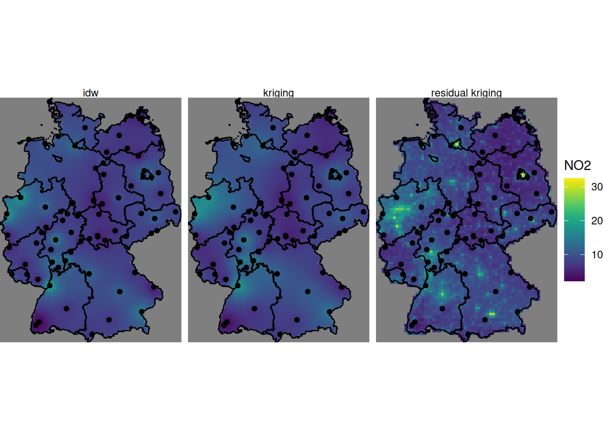
map_plot(km, "NO2").show()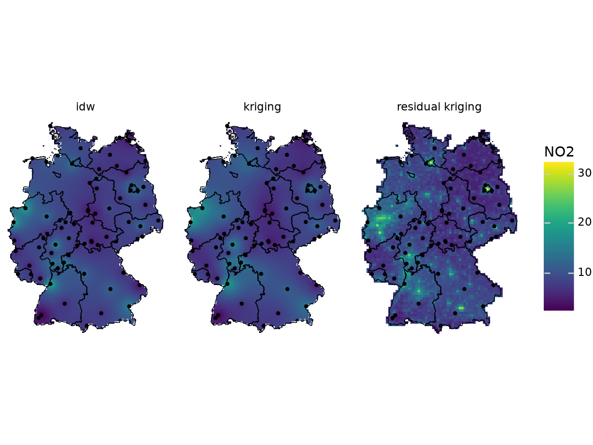
Exercise 12.2
Create a scatter plot of the map values of the idw and kriging map, and a scatter plot of map values of idw and residual kriging.
For this we can e.g. convert the object \(k\) to a data.frame:
as.data.frame(k) |> head() # NA indicates cells outside AOI
# x y var1.pred var1.var kr1 kr2 kr0
# 1 285741.3 6096239 NA NA NA NA NA
# 2 295741.3 6096239 NA NA NA NA NA
# 3 305741.3 6096239 NA NA NA NA NA
# 4 315741.3 6096239 NA NA NA NA NA
# 5 325741.3 6096239 NA NA NA NA NA
# 6 335741.3 6096239 NA NA NA NA NA
k.df = as.data.frame(k)
plot(kr0 ~ kr1, k.df, xlab = "kriging", ylab = "idw")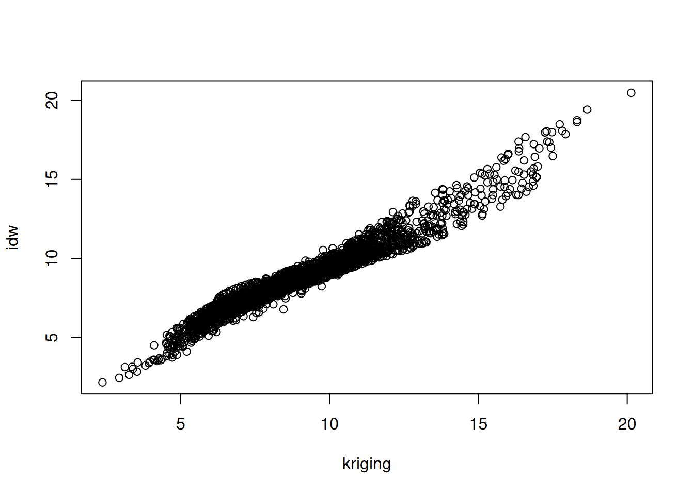
plot(kr0 ~ kr2, k.df, xlab = "residual kriging", ylab = "idw")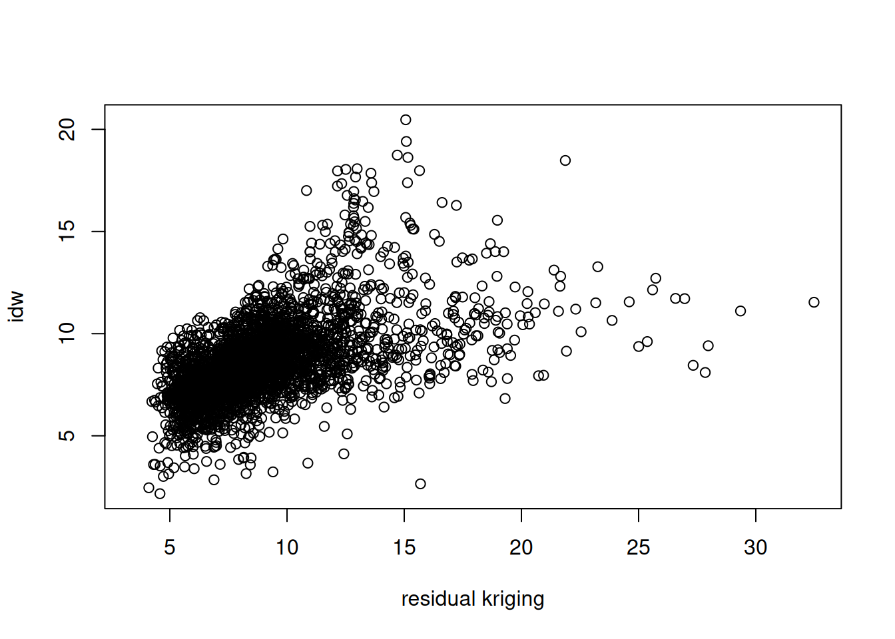
k_df = k # NA indicates cells outside the area of interest
k_df.head()
# x y kr1 kr2 kr0
# 0 285741.262022 6.096239e+06 NaN NaN NaN
# 1 295741.262022 6.096239e+06 NaN NaN NaN
# 2 305741.262022 6.096239e+06 NaN NaN NaN
# 3 315741.262022 6.096239e+06 NaN NaN NaN
# 4 325741.262022 6.096239e+06 NaN NaN NaN
fig, axes = plt.subplots(1, 2, figsize=(9, 4))
axes[0].scatter(k_df.kr1, k_df.kr0, s=3)
axes[0].set(xlabel="kriging", ylabel="idw")
axes[1].scatter(k_df.kr2, k_df.kr0, s=3)
axes[1].set(xlabel="residual kriging", ylabel="idw")
plt.show()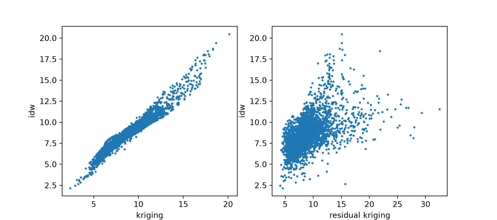
Exercise 12.3
Carry out a block kriging by setting the block argument in krige(), and do this for block sizes of 10 km (the grid cell size), 50 km and 200 km. Compare the resulting maps of estimates for these three blocks sizes with those obtained by point kriging, and do the same thing for all associated kriging standard errors.
For the point and block kriging values:
b0 = krige(NO2~1, no2.sf, grd["values"], v.m) # points kriging
# [using ordinary kriging]
b10 = krige(NO2~1, no2.sf, grd["values"], v.m, block = c(1e4, 1e4))
# [using ordinary kriging]
b50 = krige(NO2~1, no2.sf, grd["values"], v.m, block = c(5e4, 5e4))
# [using ordinary kriging]
b200 = krige(NO2~1, no2.sf, grd["values"], v.m, block = c(2e5, 2e5))
# [using ordinary kriging]
b10$points = b0$var1.pred
b10$b10 = b10$var1.pred
b10$b50 = b50$var1.pred
b10$b200 = b200$var1.pred
st_redimension(b10[c("points", "b10", "b50", "b200")],
along = list(what = c("points", "blocks: 10 km",
"blocks: 50 km", "blocks: 200 km"))) |>
setNames("NO2") -> b
g + geom_stars(data = b, aes(fill = NO2, x = x, y = y)) +
geom_sf(data = st_cast(de, "MULTILINESTRING")) +
geom_sf(data = no2.sf) + facet_wrap(~what) +
coord_sf(lims_method = "geometry_bbox")
# Coordinate system already present.
# ℹ Adding new coordinate system, which will replace the existing
# one.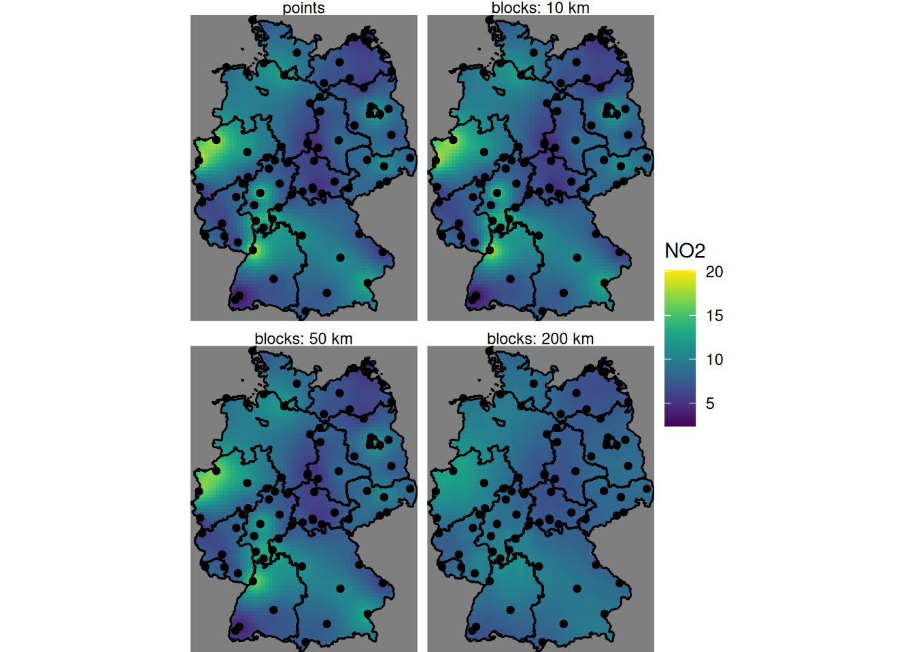
# block sizes are discretised with 8 x 8 points per block; gstat's default
# discretisation differs, so block results differ slightly from the R ones
b0, v0 = krige(xy, z, tgt, vm) # point kriging
b10, v10 = krige(xy, z, tgt, vm, block=1e4)
b50, v50 = krige(xy, z, tgt, vm, block=5e4)
b200, v200 = krige(xy, z, tgt, vm, block=2e5)
b10df = grid.loc[inside, ["x", "y"]].reset_index(drop=True)
b10df["points"], b10df["b10"], b10df["b50"], b10df["b200"] = b0, b10, b50, b200
b10df["pointse"], b10df["b10se"], b10df["b50se"], b10df["b200se"] = (
np.sqrt(v0), np.sqrt(v10), np.sqrt(v50), np.sqrt(v200))
names = ["points", "blocks: 10 km", "blocks: 50 km", "blocks: 200 km"]
b = long(b10df, ["points", "b10", "b50", "b200"], names, "NO2")
map_plot(b, "NO2").show()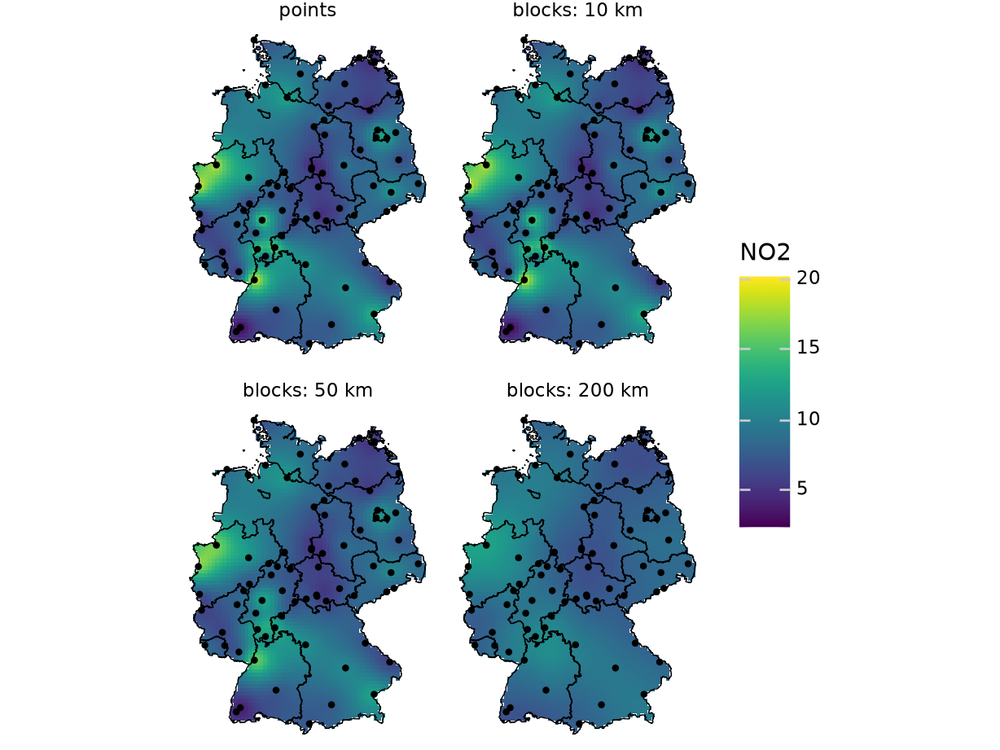
For the standard errors:
b10$pointse = sqrt(b0$var1.var)
b10$b10se = sqrt(b10$var1.var)
b10$b50se = sqrt(b50$var1.var)
b10$b200se = sqrt(b200$var1.var)
st_redimension(b10[c("pointse", "b10se", "b50se", "b200se")],
along = list(what = c("points", "blocks: 10 km",
"blocks: 50 km", "blocks: 200 km"))) |>
setNames("NO2_SE") -> b
g + geom_stars(data = b, aes(fill = NO2_SE, x = x, y = y)) +
geom_sf(data = st_cast(de, "MULTILINESTRING")) +
geom_sf(data = no2.sf) + facet_wrap(~what) +
coord_sf(lims_method = "geometry_bbox")
# Coordinate system already present.
# ℹ Adding new coordinate system, which will replace the existing
# one.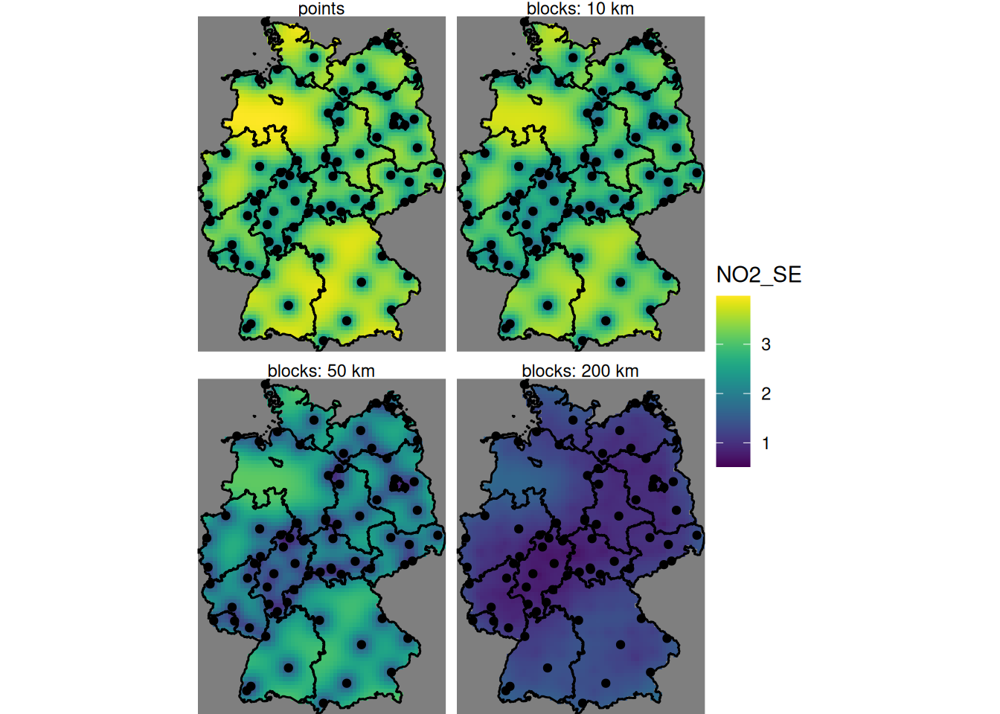
b = long(b10df, ["pointse", "b10se", "b50se", "b200se"], names, "NO2_SE")
map_plot(b, "NO2_SE").show()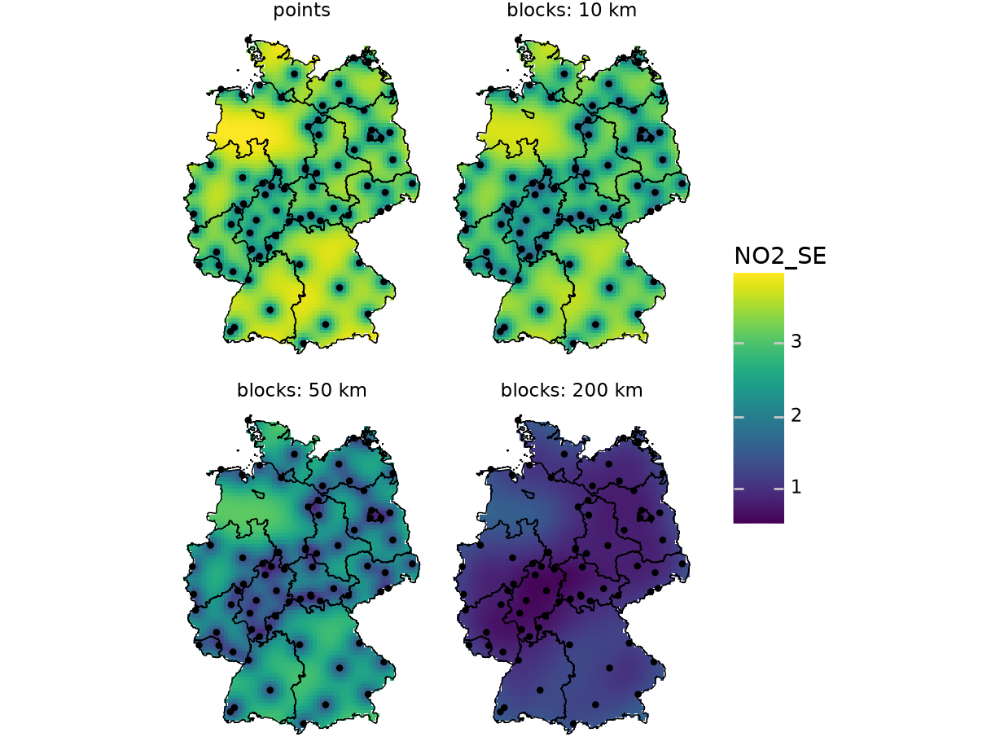
Exercise 12.4
Based on the residual kriging results obtained above, compute maps of the lower and upper boundary of a 95% confidence interval, when assuming that the kriging error is normally distributed, and show them in a plot with a single (joint) legend
b10$lower = b10$points - 1.96 * b10$pointse
b10$upper = b10$points + 1.96 * b10$pointse
st_redimension(b10[c("lower", "upper")],
along = list(what = c("lower boundary C.I.", "upper boundary C.I."))) |>
setNames("NO2_95CI") -> b
g + geom_stars(data = b, aes(fill = NO2_95CI, x = x, y = y)) +
geom_sf(data = st_cast(de, "MULTILINESTRING")) +
geom_sf(data = no2.sf) + facet_wrap(~what) +
coord_sf(lims_method = "geometry_bbox")
# Coordinate system already present.
# ℹ Adding new coordinate system, which will replace the existing
# one.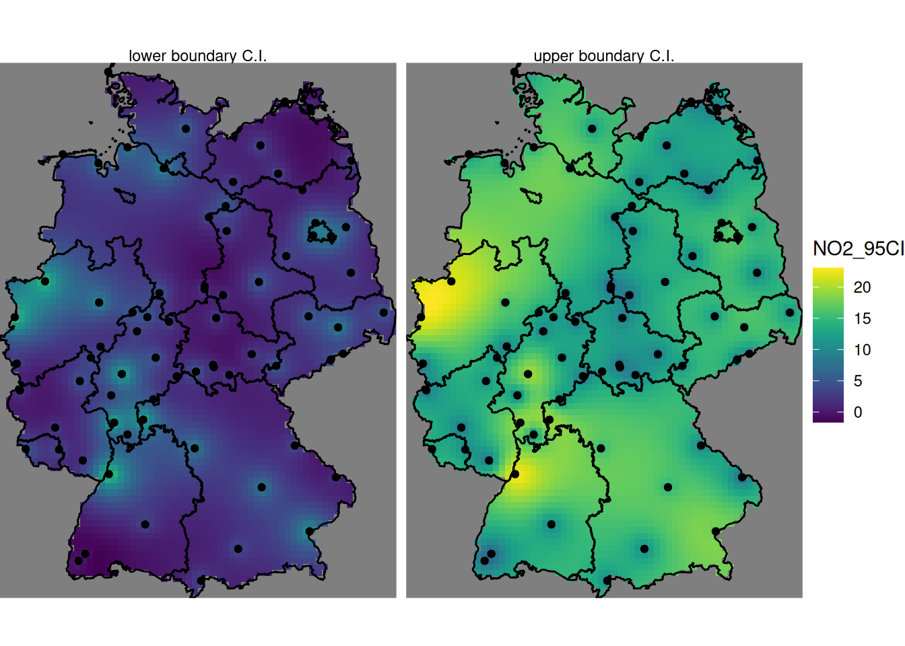
b10df["lower"] = b10df.points - 1.96 * b10df.pointse
b10df["upper"] = b10df.points + 1.96 * b10df.pointse
b = long(b10df, ["lower", "upper"], ["lower boundary C.I.", "upper boundary C.I."], "NO2_95CI")
map_plot(b, "NO2_95CI").show() # one legend, shared by the two panels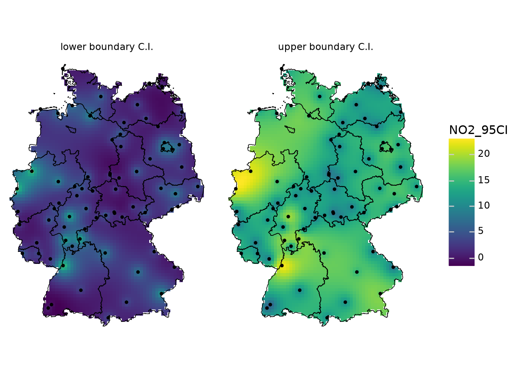
Exercise 12.5
Compute and show the map with the probability that NO2 point values exceeds the level of 15 ppm, assuming a normal distribution.
For this we use pnorm(), which gives the cumulative area under the curve from minus infinity up to a given value; one minus that value gives the probability of exceeding it.
b10$`p(NO2 > 15)` = 1 - pnorm(15, b10$points, b10$pointse)
g + geom_stars(data = b10, aes(fill = `p(NO2 > 15)`, x = x, y = y)) +
geom_sf(data = st_cast(de, "MULTILINESTRING")) +
geom_sf(data = no2.sf, col = 'orange') +
coord_sf(lims_method = "geometry_bbox")
# Coordinate system already present.
# ℹ Adding new coordinate system, which will replace the existing
# one.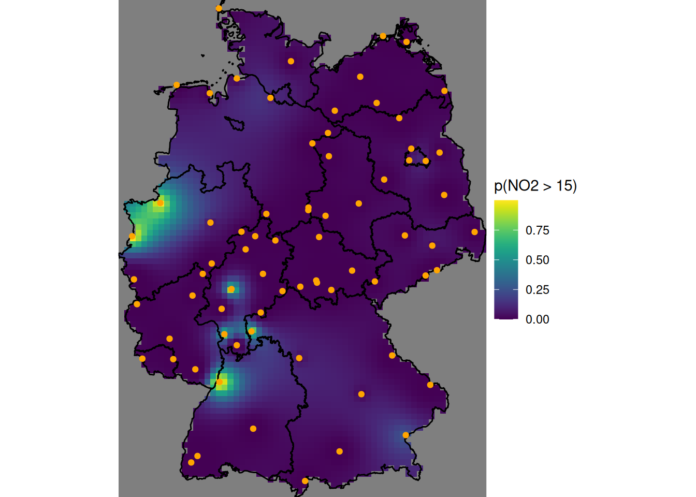
b10df["p"] = norm.sf(15, loc=b10df.points, scale=b10df.pointse) # 1 - pnorm(15, ...)
(map_plot(b10df, "p", point_color="orange") + labs(fill="p(NO2 > 15)")).show()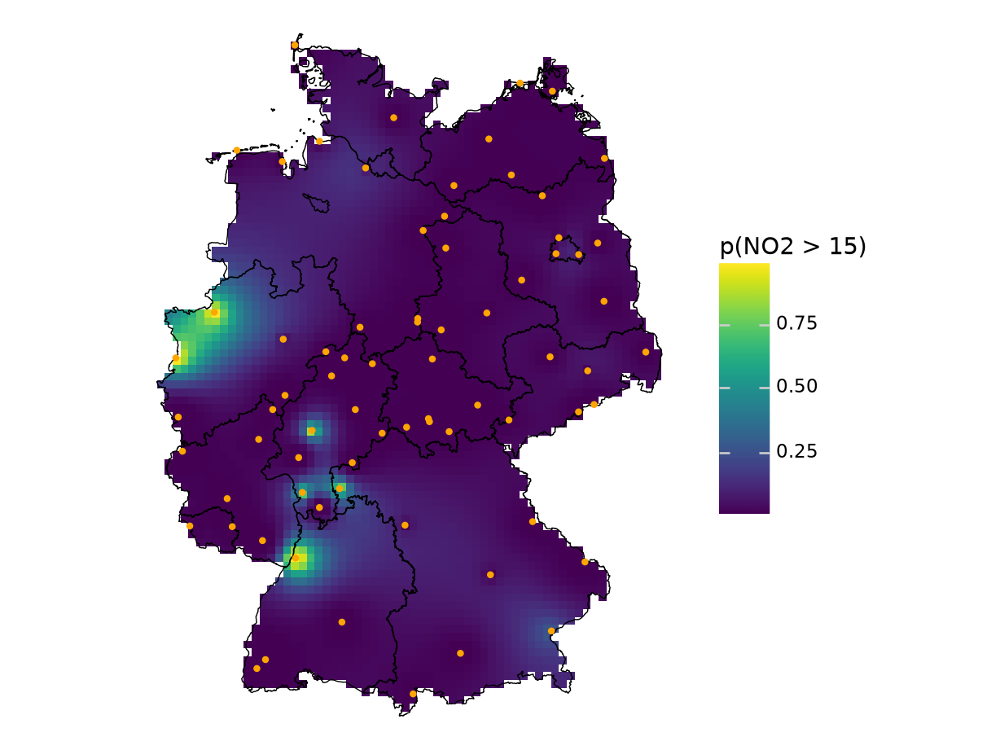